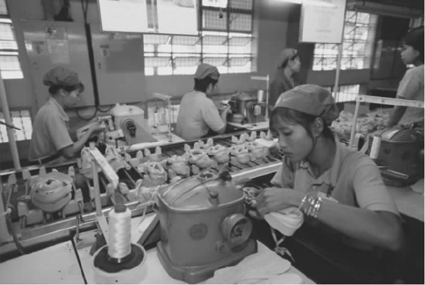
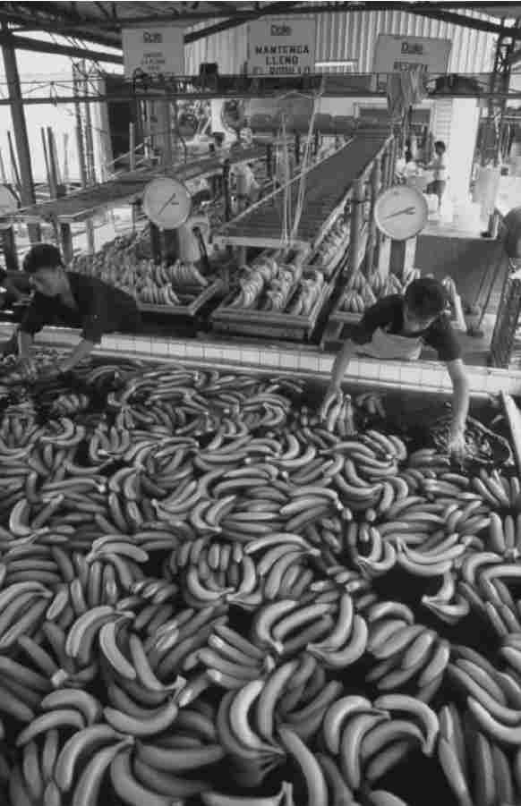

“全球性资本主义”一词已经变得很平常，有很多证据表明，现在的资本主义组织形式建立在全球基础上。每天有巨额资金在全世界范围内流动。公司不再是只在一个国家生产，并出口到其他国家，而是在相距甚远的不同国家进行生产。商品与服务市场，以及资本与劳动力市场，在许多方面也已经全球化。现实生活中的确存在全球性资本主义，它影响着普通民众的生活，但也有许多神话和这个概念联系在一起。我们将在本章对现实和神话两方面进行考察。
第一个神话：全球性资本主义是新事物。几乎从资本主义形成起，它就已经传播到了全世界。15世纪和16世纪的航海者最先发现了从欧洲到其他大陆的航海路线，商业资本主义很快就跟着起航。东印度公司将亚洲的产品带给欧洲消费者，同时将欧洲制造的商品带到亚洲。大西洋贸易三角则将商品从欧洲运到非洲，从非洲贩卖奴隶到美洲和加勒比海，并从欧洲带回糖、朗姆酒和棉花等产品。
但是，直到19世纪出现交通革命之前，贸易行程非常缓慢，时断时续，充满危险。交通方式的变革影响深远，足以与我们刚刚经历过的那次变革相比。蒸汽动力的火车和轮船不仅加速了行程，还使商品和人群得以在世界范围内有规律地、安全地进行大规模流动，不受天气影响。电报的发明意味着消息不必再通过人或鸽子进行传递，在埋下海底电缆之后，伦敦的消息可以在4天内到达澳大利亚，而原本通过海上邮件传递需要70天。后来发明的电话第一次使全世界范围内的即时通讯成为可能，从而“消灭了距离”。
19世纪还出现了有组织的全球经济体。其核心原则是在一小部分生产国和世界其他国家及地区之间进行国际劳动分工，后者为前者的产品提供市场，并提供前者无法生产的食物和原材料。资本在国家间自由流动，但局限在金本位制的框架里，自从1870年之后，金本位制通过将各国货币的价值与黄金的比值固定，起到了管制各国经济间关系的作用。这一作用一直持续到20世纪30年代，在大萧条的压力下，金本位制才逐渐瓦解。
此类全球性经济体在帝国内部组织而成，而帝国则是处于其核心位置的民族国家的延伸。这些帝国所采取的形式不仅包括侵占殖民地，还包括建立影响圈，从而分割那些没有处于直接殖民控制下的地区。欧洲率先建立了海外殖民地，美国也在太平洋地区及拉美建立起非正式的帝国，到了19世纪的最后25年，日本开始仿照欧洲模式，在海外占领第一批殖民地。在国际竞争及20世纪初的经济危机的压力之下，整个世界被帝国界线分割得越发支离破碎，每个殖民国家都努力保护它的海外市场和供应。一战后，全球经济一体化的进程事实上被逆转了。
二战后，帝国体系开始瓦解。新的金融与生产中心出现在旧工业国的直接控制范围之外。贸易不再局限于国家/帝国之内，常常跨越国界。资本和劳动力都开始更为自由地跨越边界。全球性资本主义或许并不是新鲜事物，但它显然已经发生了转变，进入一个罕见的充满活力的阶段。
虽然国际劳动分工变得普遍，雇佣劳动主要还是集中于工业社会。在第三世界的矿场、种植园和商业化农场当然也存在雇佣劳动，但在当地人的收入中，雇佣劳动所得并非全部，它通常与其他挣钱方式（如个体农业或贸易等）结合在一起。按照戴维·柯茨的估算，在这个新时代，资本对劳动力的追寻造成“世界无产阶级”的人数在过去的30年里翻了一番，达到约30亿人。
资本主义生产扩散的主要载体是跨国公司。在20世纪的最后25年里，跨国公司取得了迅速发展，从1973年的7，000家增加到1993年的26，000家。1985年之后，跨国公司对于海外业务的投资迅速增长。虽然大部分投资进入了其他工业社会，但在20世纪90年代，跨国公司在发展中国家的投资飞速增长。
最能说明这一过程的例子就是墨西哥被称为“边境加工厂”的制造业工厂的发展。这一业务始于1965年，当时墨西哥允许在距离美国边境10英里的范围内设立工厂，这些工厂的原材料和零部件进口免税，条件是制成品必须出口。1993年的《北美自由贸易协定》消除了剩余的贸易壁垒，这些工厂随后加快了发展。美国、欧洲，最终连日本的资本都加入进来，利用墨西哥廉价的劳动力，沿着美墨边境线建立了数以千计的制造厂和装配厂，主要从事车辆、电子和纺织行业。每天经理们从自己位于美国的家中开车去上班，而没有汽车的工人们则从棚户区由大巴车送去工厂。
劳动力在当地很廉价，不仅因为劳动力供应很充足，而且因为劳动力缺乏组织和管制。试图建立独立的工会组织的尝试遭到了雇主和政府的联合打压。《北美自由贸易协定》规定了工人的权利以及对工会的保护，但这部分内容并没有得到执行。美国的工会为减少来自墨西哥廉价劳动力的竞争，尝试将墨西哥工人组织起来，并援引《北美自由贸易协定》中的劳动力条款作为依据，但并不成功。有关医疗、安全和环境等的规章制度并不健全，或者执行不力。墨西哥政府显然是视而不见，因为“边境加工厂”对于墨西哥经济作出了突出贡献，它提供就业（在本世纪初创造了约100万个工作岗位），并创造了仅次于石油业的巨额外汇收入。
图10墨西哥“边境加工厂”的廉价劳动力
近年来，亚洲对于资本产生了更大的吸引力，尤其是日本的资本，连续几波涌入远东国家。二战后，随着日本工业的迅速发展导致土地及劳动力短缺，日本的国内生产成本变得日渐昂贵，价格也随之上涨。20世纪70年代和80年代，为寻求廉价劳动力，日本资本进入号称“四小龙”的中国香港地区、中国台湾地区、新加坡和韩国。随着那里的生产成本也变得更加昂贵，第二波资本流动又从日本以及“四小龙”地区进入印度尼西亚、马来西亚和泰国。近来，第三波投资潮则进入了中国和越南。目前看来，中国是资本所寻求的目的地，它正威胁到墨西哥经济，将原本在墨西哥投资的公司都吸引到了中国。
制造业在这些国家的扩散尤其吸引了年轻女性从事雇佣劳动。她们据称占到墨西哥“边境加工厂”劳动力的百分之六十至七十。耐克和盖普公司在东南亚的工厂被指控雇用16岁以下的女工，尽管当地法规禁止雇用童工。资本主义与父权制相结合，以获得最廉价的劳动力，因为女性的报酬通常低于男性，女性服从男性的控制，并且可以随时退工。如果需要裁减劳动力，女性可以回到家庭劳动。

图11越南的耐克加工厂雇用的廉价劳动力
雇佣劳动的扩散导致了工人力量在全球范围内的弱化。在旧工业社会里，集体组织使工人得以缩小劳资双方之间的力量差异。廉价的、无管制的国外劳动力的竞争破坏了这种集体力量，工会组织发现很难将国外工人纳入组织。作为消费者，旧工业社会的工人当然能够获益，因为国外的廉价劳动力以及更为激烈的国际竞争降低了他们所购买的商品的价格，但是自从20世纪80年代以来，旧工业社会的实际工资一直在减少。而且，随着资本变得更具流动性，各个民族国家不得不相互竞争，争夺资本。20世纪80年代英国通过的反工会立法之所以能获得支持，部分原因在于它使英国得以吸引在80年代和90年代期间进入欧盟的日本和韩国资本。
不仅制造业迁出了旧工业社会，现在大多数办公室工作，如打字、接电话、数据处理、软件开发及问题解决等，都可以远距离完成。信息及通信技术的进步使这部分工作很容易转移到国外更为廉价的场所，那里的工资及办公费用更低。和制造业一样，出于相同原因，这些工作通常也都雇用年轻女性。
电话咨询中心是英国增长最快的就业部门，弥补了制造业外移所损失的工作岗位，但如今电话咨询中心也正在迁往国外。银行、保险、旅行社、电信及铁路等公司正在将它们的电话咨询业务从英国迁往中国、印度和马来西亚。同样，法国公司也将此类工作迁往非洲说法语的国家。美国公司很早以前就已经将电话咨询中心和数据处理业务转到了加勒比海地区。
世界上说英语的地区占有相当大优势，一些加勒比岛国以及印度由此获得发展便利，虽然只有英语是不够的。当然，一些训练是必要的，那些在印度从事电话接听服务的人员都接受了西式发音和会话训练。电话咨询中心的有效运作还需要“关系经理”的小心经营。他们能在效率与客户服务之间取得平衡。软件开发需要更高层次的技术，但是印度，尤其是班加罗尔市，已经成为软件生产中心之一，因为当地能提供教育程度较高的、说英语的劳动力。知名大公司如德州仪器、摩托罗拉、惠普及IBM都在那里建立了软件（及硬件）生产基地。
这不仅是贫穷国家相比富裕国家能够提供更为廉价的劳动力的问题，还涉及几个贫穷国家之间的激烈竞争。巴巴多斯和牙买加早就开展了远程工作，如今它们越来越多地遭遇到来自其他加勒比岛国及中美洲国家的竞争。整个加勒比地区又面临着来自印度、菲律宾、马来西亚和中国的更为廉价的劳动力的竞争。远程工作业务能够轻松建立，是因为这种工作形式更为常规化并且所需技术含量不高，因而此类工作的扩散很少遭遇限制。
说到资本主义在全球范围内的传播，国际旅行业并不常为人提及，但它的发展最为突出地体现了国家间经济联系的加强。从1950年到2001年，国际旅游的游客人数从每年2，500万人次增加到近7亿人次。在许多最贫穷的国家，旅游已经成为外汇收入的主要来源。
国际旅游业将资本主义的商业运作扩散到资本主义发展之前从未触及的地区。它渗透到那些无力为世界市场提供商品及其他服务的地区。的确，那些偏僻的或不发达的地区，从位于安第斯山脉东侧斜坡的马丘比丘到喜马拉雅山，对于游客都具有特别的吸引力，因为它们很偏僻或者很传统。旅游业为酒吧和宾馆的付费劳动提供了就业机会。它催生了对食品生产和运输的更大需求，也为当地旅游纪念品制造业和古迹仿造提供了基础。旅游业的收入能加速金钱循环，促进制造商品的进口，并建立新的消费模式。
文化习俗、野生动植物、景点及景致等获得了之前从未有过的金钱价值，商品化进程随之出现。习俗在经历商品化之后可能失去原有的本真性，自然会变得不那么自然，虽然商品化至少能让它们在经历改变之后存活下去。在一个资本主义势力日渐扩张的世界里，唯一能确保文化习俗和自然景点保存下去的方式就是设法从中获取利润。而且，保护原则自身也可以成为一个产业的基础，比如哥斯达黎加所推行的生态旅游。
随着贫困国家中成人与儿童的身体获得用金钱衡量的价值，全球旅游业也带来了由性旅游所引发的另一种商品化过程。据称，1999年仅在美国就有超过25家公司提供前往亚洲目的地的性旅游服务。“互联网世界‘性’指南”提供世界上每个国家性服务的信息与报道，包括是否提供服务、服务内容及价格，并有相关链接来帮助人们做好行程安排。指南并没有提供是否存在儿童性服务的相关信息，但这是性旅游业的主要卖点之一，因为它使成人得以在遥远的、未受管制的地方得到此类服务，其间所担负的风险显然远远小于在本国从事类似活动。
全球旅游业显然并不总是福音，即使它为接受游客的社会带来了一些经济回报，我们必须记住，利润中的大部分都被主宰旅游业的外资公司（航空公司、连锁宾馆及旅行社）掠走了。
在探讨全球性资本主义的上述案例时，我们忽略了农业。在我看来，全球性农业并非新事物，很早以前就已经在印度和斯里兰卡的茶叶种植园以及中美洲的水果种植园里得到繁荣。19世纪建立起的国际劳动分工在工业社会为世界其他地区的农产品创造出了新的市场，西方公司在那里投资并进行大规模生产。
但是农业中也存在日渐激烈的国际竞争，资本主义生产业已扩散。20世纪90年代，香蕉产业出现危机，因为当时生产的香蕉数量超过市场需求。美国水果公司，尤其是多尔，开始将生产转移到厄瓜多尔，那里的工资及其他劳动力成本远远低于美国，并且那里没有工会组织（与此同时，现有的组织在中美洲遭到了攻击）。这些公司还利用世界贸易组织对欧盟施压，以求欧盟停止优待非洲和加勒比海地区的前殖民地香蕉种植者。在这些地区，大部分香蕉都由农民以更高成本进行小规模种植，在自由市场上，他们根本无法与大公司竞争。最终，大公司与欧盟间达成妥协，对小生产者进行一定程度的保护，同时尝试将厄瓜多尔的工人纳入工会组织，但工会和小生产者的命运依然是未知数。
小生产者发现他们被迫以其他方式朝着资本主义农业靠拢。万达那·希瓦提出，农业日渐被高度集中化的“生物科学企业”所主宰，此类公司同时涉足农产品的生产、销售、生物科技、化学与制药行业。它们销售经过基因改造的种子，这些种子能生长成体型较大的农作物，据说通过向稻米中添加维生素A成分等类似方法，这些农作物还能避免营养缺乏症。此类农业能够生产大量经济作物，但它需要大量使用这些公司生产的杀虫剂和除草剂，同时需要大量用水。随着稀缺的水资源用尽，化学污染加剧，生物多样性消失，此类农业对环境的影响是灾难性的。农民不仅仅依赖于这些公司，还背负债务，因为需要大笔投资。如果收成不好或其他灾难造成他们无法偿付债务，农民最终可能失去土地。小规模农业失去活力，而大型的资本密集型组织取代了它们。
伴随这个过程一起出现的是自然的商品化，因为植物、种子、基因、水这些之前经常可以免费获得的自然资源如今成了商品并具有金钱可衡量的价值。知识也变成了商品。世界贸易组织所提出的《与贸易相关的知识产权协议》要求各国允许对植物品种和基因材料进行专利权保护。万达那·希瓦认为，这意味着：

图12多尔公司在厄瓜多尔进行大规模香蕉生产
我们正在讨论的资本主义商业行为的扩散不可避免地加速了资金的循环，但是20世纪的最后25年所出现的真正令人震惊的循环加速，其原因主要在于投机性的资金流动。到20世纪末，每天 的外汇交易总额达到1.5万亿美元，这一金额相当于英国的年度 国民生产总值。根据曼努埃尔·卡斯特利斯的统计，国际投资在1970年至1997年间增长了近200倍，其中大部分属投机性质。
卡斯特利斯强调，技术进步造就了国际货币交易与投资的大规模扩展。一定程度上，这与通讯有关，因为地球同步卫星、数据的数字传输以及电脑网络不仅加快了交易速度，也增加了能够处理的交易量。同时这也与金融技术和革新有关。金融服务业的发展创造了许多新的市场投资方式以及将公司及个人资金引入市场的新渠道。新的金融工具及产品，连同新的通讯设备，产生了跨越国境的资金流。
如今声名狼藉的“衍生产品”，即尼克·李森曾交易并产生灾难性后果的那种金融产品（参见第一章），在20世纪80年代和90年代曾是最尖端的新金融工具。资金通过更为直接的渠道以投资基金的方式进入自20世纪80年代起开始吸引投资的“新兴市场”。投资者有机会在“新兴市场”低价购入新近实现工业化的国家的股票，然后等价格攀升后抛出获利。富裕社会的金融业迅速出现了一大批此类基金以吸纳普通民众的储蓄。20世纪90年代末的经济危机（参见第六章）随即迅速清空了这些基金所累积的价值。
跨境资金流动的原因不仅是技术与金融革新。20世纪70年代的利率浮动造成了新的不确定性和新的机遇，从而刺激了货币交易与期货市场。“浮动”意味着货币价值由市场而非官方决定，它随着货币供求变化而上下浮动。对于需要外汇来经营业务的公司来说，这增加了不确定性，因此，它们需要通过交易期货来保护自己。但是，货币交易增多主要还是因为浮动汇率为投机提供了更多机会。
不妨先让我简要说明一下，为什么汇率以这种方式浮动。之前，在1944年布雷顿森林会议建立的金融体系下，货币价值与美元挂钩，后者的价值又与黄金挂钩。这种做法为国际贸易扩张及一段时期内经济的持续增长提供了必须的稳定性。但是，20世纪70年代初，维持美元价值稳定变得越来越困难，美国政府被迫让美元贬值。在当时美元贬值有特殊原因，最主要的原因是美国政府在越南战争中开支巨大，但布雷顿森林体系当时已经承受了越来越大的压力。
这是因为要想维持固定的官方汇率，政府只能采取不受欢迎的政策，或者控制资金流动，不许资金出境。如果不断增多的贸易赤字对现有汇率施加了压力，而且投机者开始对可能出现的贬值进行投机，政府可以采取严厉的经济措施来维持货币价值。比如，它们可以减少消费以抑制进口。但是，在民主社会要想这样做，在政治上非常困难。另一种办法是，它们可以阻止投机者的资金流动，可以通过汇率管制来做到这一点。但随着贸易增加，随着一些国家的货币（尤其是美元）在国外大量积累，随着数额巨大的资金开始在国家间流通，控制资金流动变得更加困难。
20世纪80年代，重新市场化的资本主义所展现的解除管制的态度（我们在第三章已对此作了讨论）同样在其中发挥了作用。由国家所制定的固定汇率以及对于国际间资金流动的控制与新的自由市场和竞争的观念不相符。金融中心之间更为激烈的竞争为金融市场的解除管制和金融革新提供了动力。与股市相关的金融业，其经济重要性日渐加强，而这些行业的健康度取决于它们通过市场吸引国际资金流的能力。1987年10月，伦敦市解除金融管制的“大爆炸”举措背后，是世界各大金融中心间的竞争，因为伦敦努力想赶上纽约。但竞争也来自新的金融中心，到20世纪90年代，发展中国家有35个股票市场。一些已经变为了具备复杂功能的金融中心。正是在新加坡国际货币期货交易所，尼克·李森先是成就了自己的名声，后来又身败名裂。
资本主义制度与实践已经扩展到全世界，但在此刻，我们必须暂停一会儿，考虑一下“全球性资本主义”究竟有多么全球性。
世界范围内的资金流动已经增加，但这是“金融全球化”吗？即使新的金融中心已经在发展中国家出现，并且投资于“新兴市场”至少一度变得很时尚，大部分资金依然在北美、欧洲和日本间流动。卡斯特利斯在1998年就已经指出，新兴市场只占有全世界资本的7%，虽然这些国家拥有约占世界85%的人口。而且，在1997年至1998年的亚洲及俄罗斯金融危机警告了外国投资者之后，进入新兴市场的资金至少短期内出现了锐减。在1998年至2001年，只有190亿美元流入新兴市场，而之前的1994年至1997年则高达6，550亿美元。
同样的情况也适用于全球性旅游业。国际游客中大部分人在欧洲、北美与日本等发达国家间流动。2001年，从国际旅游业中获利最多的四个国家分别是：美国、西班牙、法国和意大利，不过中国占到了第五名。
资本主义生产已经扩散。相比20世纪80年代，更多的投资在90年代进入贫困国家，但投资依然集中于少数几个国家，如中国、巴西和墨西哥，很少有资金投入非洲。根据经济合作与发展组织的统计数字，发展中国家于20世纪90年代所接受的外国直接投资中的约1/3流入了中国。2000年，整个非洲（不包括南非）所接受的外国直接投资占世界总额的比例不到1%，这个数字相当于芬兰，一个人口只有500万的欧洲国家，所接受的投资金额。
尽管人们常说，全球性资本主义正带来世界的一体化，但实际上国际间差异在不断增加。一些之前的贫困国家和地区，如亚洲四小龙，已经摆脱了落后状态，部分地缩小了它们与富裕国家和地区之间的差距。但它们只是例外。联合国人类发展报告清楚地显示，最富裕国家与最贫穷国家之间的差距进一步加大。1820年，世界上最富的五个国家的富裕程度相当于五个最穷国家的三倍。1950年，双方的差距变为35倍；1970年，44倍；1992年，72倍。国际间的财富差距正让世界持续变得更加泾渭分明 。
“全球化”一词的问题之一在于，和“全球性公司”的说法一样，它暗示着一个新层次，即超越国家的全球性组织，已经出现。的确，世界上有许多跨国公司，它们在不同的国家经营，跨越了国家界线，但是大多数公司的经营范围只限于几个国家，并且从本质上来说算不上全球性。通常认为它们藐视民族国家的限制，将劳动力雇佣转移到国外，并时常逃避本国的税收，但是所有这些公司都在某个民族国家内设有基地，大多数都拥有大量资产，并在该国提供大部分工作岗位。它们利用本国的便利，包括基础设施与制度，并使用本国权力来促进及帮助它们在国外的业务。它们为贫困国家提供了就业，但与此同时也利用了这些国家的廉价劳动力，驱逐了当地竞争者，将利润输回本国。彼得·迪肯认为，跨国公司同时也是全国性的公司，大多数公司根本称不上全球性。
因此，使用“全球性资本主义”的说法时必须小心。资金流及投资流在全球的分布是如此不均衡，如果把它称为“全球性”的，那完全是误导他人。而我们通常使用的全球性术语，如“全球性资本主义”、“全球经济”、“全球社会”等掩盖了正在不断被拉大的国际间差距，同时也让人忽视了国家和国家政府的重要性。
然而，有一个方面可以肯定地说，资本主义已经全球化了。
1989年，资本主义最主要的全球性替代体系，即国家社会主义，开始解体。戈尔巴乔夫在前苏联发起了“结构重组和开放”计划，同时也开始放松了对东欧国家的控制。前苏联的经济一直以中央计划和对经济的集中式指导为基础进行运作，市场只发挥边缘作用。前苏联经济曾遭受严厉批评和嘲笑，因为它效率较低，生产率较低，总体经济表现不尽如人意，环境污染严重，这一切都使得前苏联经济成为了反衬资本主义优势的鲜活证据。前苏联创纪录的工业化和大幅度经济增长、对充分就业和低通胀率的保持、教育和医疗服务能力，现在大多已经被遗忘了，不过毫无疑问，很多俄罗斯人依旧记得前苏联曾经提供给他们的稳定和保障。
前苏联解体的主要原因在于，它无法与西方更富革新精神的资本主义经济竞争。在俄罗斯和东欧地区，越来越多的人期望见到一个交流更多的世界，人们无法与西方的个人主义消费文化相隔离。在国家社会主义限制下运行的经济无法满足这些期望，或者至少在那么多资源用于军事生产的时候无法做到。在我看来，冷战所施加的负担对于前苏联来说难以承受，里根的“星球大战”计划是最后一击，因为这一计划使超级大国之间的军事和工业竞争大幅度升级。
戈尔巴乔夫试图引入渐进改革计划，但是从计划经济到市场经济的逐步转变并没有实现。一旦国家指令停止，随之而来的是经济瘫痪。在叶利钦的领导下，政府试图将俄罗斯引入资本主义。1991年对于经济所实施的“休克疗法”将价格从政府控制下解放出来，到1994年底，俄罗斯3/4的大中型企业实现了私有化。对于大多数普通民众而言，后果是灾难性的。根据约翰·格雷的说法，1991年至1996年间，消费者价格增长了1，700倍，约4，500万人陷入贫困。休克疗法的政策被暂停，在普京的领导下，俄罗斯现在正回头走向国家管控较多的资本主义形式。但是，这并不是要回到国家社会主义，因为后者的结构已经解体，而一些具有强大影响力的集团现在则期望从资本主义中受益，俄罗斯已经加入到世界资本主义经济体系中。
国家社会主义的解体排除了资本主义主要的备选模式，发展中社会受金融压力和国际机构所迫，只得遵循占据主导地位的美国式资本主义模式。其中，由美国所主导的国际金融机构——世界银行和国际货币基金组织——扮演了关键角色。这两个机构都是在二战期间由布雷顿森林会议所创立，在同一次会议上，还创立了战后固定汇率体系。世界银行的功能是帮助各国进行战后重建和发展，而国际货币基金组织则起到了维持国际经济稳定的功能。尽管它们职能不同，在20世纪80年代，这两个机构开始共同推进在美国及其他主要工业国占据主导地位的自由市场意识形态及政策。和其他国际机构一样，它们受强大的成员国所操纵。
这两个组织提出了三条相互关联的重要政策。第一条是提倡财政节俭，以减少不必要的政府开支，并废除可能引发通胀的宽松货币政策。第二条是私有化，以清除效率低下的国有企业，引入市场准则，同时也减少政府开支。第三条是自由化，在成立于1995年的世界贸易组织的协助下，消除贸易壁垒，停止政府对市场运行的干预。这些政策的执行依靠“制约性”措施，即根据政策执行情况有条件地发放贷款。发展中国家对于贷款的高度依赖意味着，不管这些政策有多少问题，它们都无力抵制此类政策。的确，相比发达国家，这些政策在发展中国家被更为严格地执行。美国、欧洲和日本都花大力气保护其农业，并提供资金补助。
约瑟夫·斯蒂格利茨在1997年至2000年期间担任世界银行高层领导，他对这些政策做了严厉批评，尤其是国际货币基金组织的政策。斯蒂格利茨并非反对政策本身，在某些情形下这些政策能够带来收益，他反对的是这些政策被不加区分地、过于匆忙地强加给各个国家。当条件不合适的时候，财政紧缩可能破坏依赖政府开支的重要项目，导致大规模失业，而私有化可能导致公共资产的流失以及更高的消费品价格。自由化，尤其是金融市场的自由化，很可能打开外国资本的入侵之门。斯蒂格利茨认为，国际货币基金组织在这方面的政策经常受到它与华尔街金融利益关联的驱动。
国际货币基金组织在执行这些政策时就仿佛不存在其他的选择。斯蒂格利茨对比了俄罗斯和中国的经验。国际货币基金组织的建议引导俄罗斯采取了“休克疗法”，造成了大规模贫困，而中国则采取了相反的策略，逐步转型，“在如此短的时间内完成了历史上最大规模的贫困削减”。中国成功的秘诀就在于没有消灭旧制度并期盼新制度能自然出现，而是允许新的资本主义企业在现有的社会秩序中发展。中国没有犯下大规模私有化的错误，而是按照斯蒂格利茨所提出的建议，创造出条件，使私有制经济部门能够形成并逐渐繁荣。
这当然不仅只是选择正确的政策和政策顾问的问题，真正的原因在于中国有更具效率的精英管理者，而正在解体中的前苏联的统治阶层则处于瘫痪状态。相比之下，中国的精英管理者在更为强大的经济和国家机器辅助下，更有可能走出一条自己的道路，并且对转型加以控制。目前看来中国正在完成成功的经济转型。
国家社会主义已经解体，资本主义作为独立发展的经济体系已经在全球占据了主导地位。相比国家社会主义，资本主义提供了更多的商品和服务，也提供了更多选择。但是，这并不意味着，只有一条路能通往经济成功，因为有不同的道路，并且，正如我们在上一章所看到的，有不同的方式来组织资本主义。我们不应该把资本主义之外 的其他选择与资本主义内部 的不同选择混为一谈。
“全球性资本主义”一词简便地传递了这样一个理念，即资本主义制度与实践近年来已经扩散到新的区域，并以新的方式将相距甚远的各个地方紧密结合在一起。毫无疑问，这一切已经发生，并使我们所生活的世界产生了意义深远的改变。资本主义是全球性的主宰体系，并将在不远的将来保持这一地位。
但是，在本章的讨论过程中，我们已经发现，“全球性资本主义”这一概念也产生了具有重要影响的、误导性的神话。神话 一：全球性资本主义是新近产物。这种说法是错误的，因为全球性资本主义有悠久的历史渊源。神话二 ：资本在全球范围内流动。事实上，大多数资本只在一小部分富裕国家之间流动。神话 三 ：资本主义的组织形式现在已经变为全球性的，而不是国家性的。事实上，国际间差异的重要性一如既往，民族国家继续在跨国公司的经营活动中扮演着重要角色。神话四 ：全球性资本主义实现了世界一体化。事实上，资本主义全球化程度越高，由国际间财富差异所造成的世界分裂趋势就越发明显。